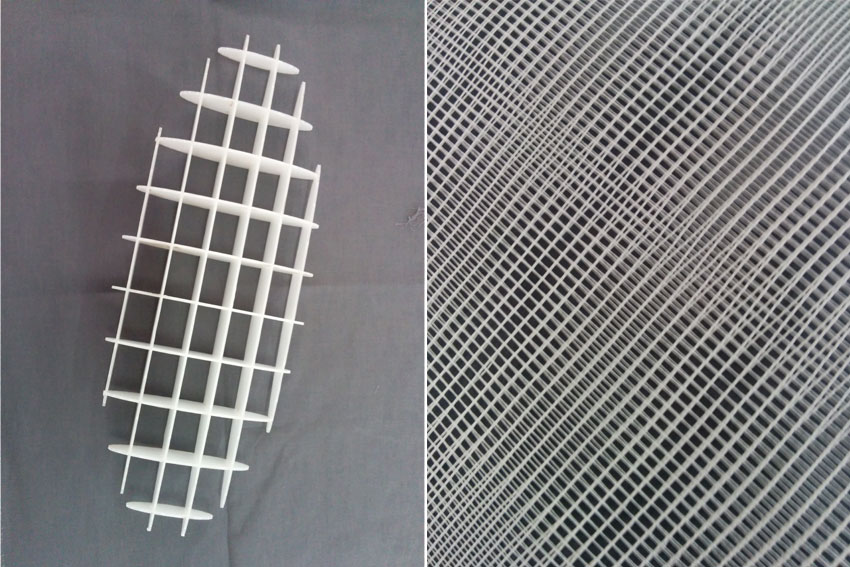
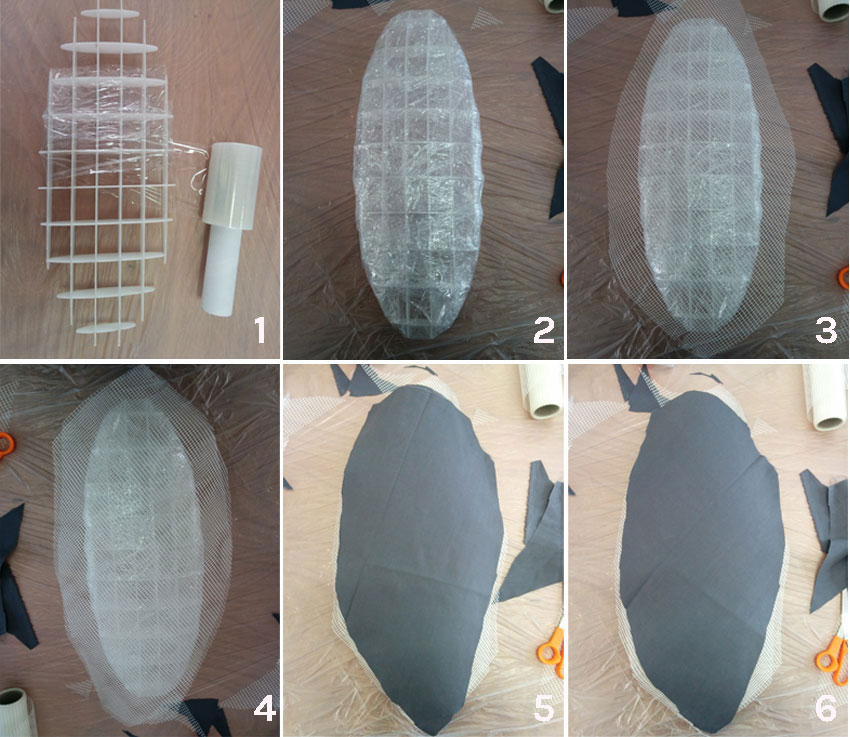

This weekly assignment consist in making a 3D mold, and produce a fiber composite part in it.
As mold, I used a 3D shape created with rhinoceros and suddenyl sliced with 123D make in several 2d elements interlocked together to create a 3D centering structure. Once file has been ready, I cut the elements with the laser cut, using a Polypropylene (PP) 3mm tick sheet that is safe for lasercut. The structure wasn't extremely solid neighter very packed of interlocking 2D elements and I was a bit scared about its resistance under the pression of the vacuum environment (end of the process) but at the end of the day, thi structure performed in an acceptable way.
Elements and patterns

Once the centering structure was ready, I started collecting all the materials and tools I needed to create a composite material upon my structure. As a fiber, we used a raffia soft grid that we had in the lab, that performed very well. The raffia created also a beaufiful moire-effected pattern that I in any case left for the internal side of my object.
Fiber layers

Since the non-dense nature of my mold, I needed to find a solution to create a sort of continuous surface to accomodate the several layers of fiber, fabric and resins on the mold and I tried a simple metod using several twists of plastic film and adehesive tape to make to corner sort-of round (img 1 and 2).
I then cut the several layers needed to make the composite material that are in my case two layers of fabric and two layers of raffia fiber. (img 3, 4, 5 and 6).
1) Mold preparation and film covering
2) Fabric and fiber layer cut (4 layers)
3) Epoxi resins mix / 2:1 ration; Pot life is 40 minutes and cure time is 24 hours)
4) Expoxi mix application onto each of the 4 layers
5) Plastic film banding of the resin treated centering structure
6) Composite structure placement in the bagging film valves-equipped
7) Protective fabrics overlap
8) Air removal
9) 24 hours of curing time
10) frequent checks to the vacuum bag condition